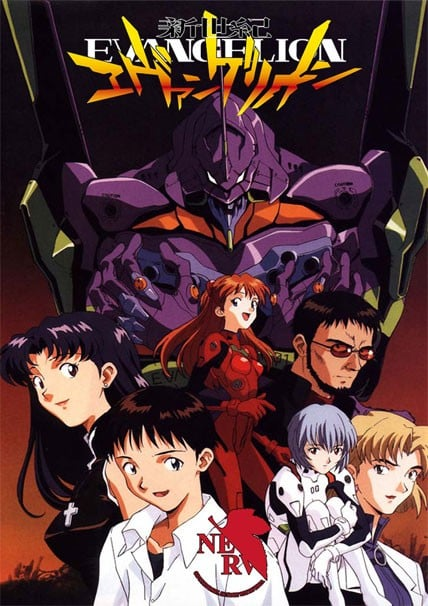
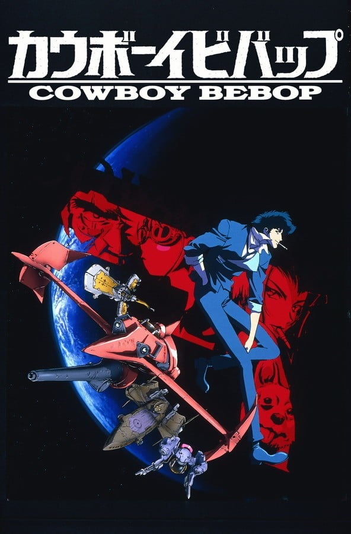

题材交叉
既在「高分热血动漫推荐」，也在「高分科幻动漫推荐」。

8.7「新世纪福音战士」（1995）是一部TV，由庵野秀明执导，制作タツノコプロ，类型包括科幻、机战、战斗，评分8.7，在本站出现在7份片单中，例如高分日漫推荐、高分TV动画推荐、高分热血动漫推荐。页面只做片单对照，不提供播放。2000年，一个科学探险队在南极洲针对被称作“第一使徒”亚当的“光之巨人”进行探险。在对其进行接触实验时，“光之巨人”自毁，从而发生了“第二次冲击”，进而导致世界大战。最后，人类人口减半，地轴偏转、气候改变。根据对“第二次冲击”的调查，联合。
按共享片单数排序，用来找和「新世纪福音战士」一起出现的高分动漫。

9.1